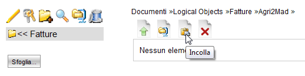

Visualizzazione Cartella |
LogicalDOC salva i documenti in cartelle. L' idea di fondo è simile a ciò che viene fatto in un disco fisso locale.
Selezionando una cartella nella parte destra dello schermo ne vengono mostrati i documenti che ne fanno parte. Una cartella può contenere documenti e sotto-cartelle.
Nella parte superiore sono visualizzati i controlli generali.

In ordine da sinistra a destra: Crea documento, Importa Archivio zip, Taglia e Cancella.
Nella parte sottostante sono mostrati i documenti contenuti nella cartella selezionata.
Ai documenti è associato un Menù Strumenti, che viene attivato facendo Click con il pulsante Destro del mouse sul titolo del documento.
Cancellare i documenti
La funzione di cancellazione è molto semplice e veloce.
Occorre spuntare i documenti che si desidera cancellare utilizzando la checkbox posta a sinistra del Nome documento.
E' disponibile anche una opzione per selezionare tutti i documenti di una cartella clickando l'icona "Seleziona tutti" posta nella testata della tabella documenti.
A questo punto cliccare sull'icona Cancella. Il sistema richiederà una conferma di sicurezza, selezionare "OK" per procedere alla cancellazione.
| I documenti cancellati non sono ripristinabili né dall'utente né dall'Amministratore. Durante la cancellazione il sistema elimina tutte le informazioni ed i files collegati ai documenti da eliminare. |
|
Tagliare e incollare
Questa funzionalità consente di trasportare i documenti da una cartella ad un altra all'interno del sistema, senza doverli scaricare e reimportare.
L'operatività riprende i concetti enunciati per la "Cancellazione documenti".
L'operazione si esegue in 4 passi:
- prima spuntare in una cartella i documenti che si desidera "Tagliare"
- cliccare sull'icona taglia (dopo aver cliccato l'icona cambia in Incolla)
- posizionarsi sulla cartella di destinazione navigando l'albero delle cartelle sulla sinistra (il percorso corrente viene mostrato nella parte destra dello schermo)
- Incollare i documenti nella cartella cliccando l'icona "Incolla".
2. evidenzia l'icona Taglia

4. evidenzia l'icona Incolla